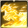
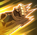
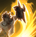

CLASSE: Lutador
FACÇÃO: Luminarca
DESCRIÇÃO: Herói com alta capacidade de controle e ganho de escudos, quanto mais escudos para ele é melhor. Facilidade de agrupar inimigos e se não for abatido no inicio da partida, facilmente faz 1x5.
HABILIDADES:

Nome Skill
Nome Skill
Apolo invoca sua Carruagem Dourada para puxar os inimigos para perto em sua frente, causando dano equivalente a 300% de seu Ataque. Além disso, ele ganha um escudo com o valor de 300% de Ataque por 8s. Para cada inimigo puxado, o valor do escudo será aumentado em 100% do Ataque. Enquanto estiver ativo, o escudo aumenta o ataque de Apolo em 15%.
Nv2: Aumenta o valor do escudo para 400% do Ataque
Nv3: Aumenta o valor extra do escudo para 10% do Ataque para cada inimigo puxado em sua direção
Nv4: Aumenta o bônus de Ataque para 20%

Nome Skill
Nome Skill
Depois que seu ataque básico atinge um alvo, Apolo ganha 1 acúmulo de 'Sol Nascente'. Cada camada de 'Sol Nascente', aumenta a velocidade de ataque de Apolo em 10% e Ruptura em 5%. Este efeito pode acumular 6x e dura até o final da batalha. Se o alvo do ataque básico de Apolo for trocado, todos os acúmulos serão perdidos, mas ele ganhará um escudo equivalente a 250% de seu ataque por 8s.
Nv2: Aumenta o impulso de Ruptura para 8%
Nv3: Aumenta o valor do escudo para 300% do Ataque
Nv4: Aumenta o bônus de velocidade de ataque para 15%
Nome Skill
Os ataques básicos de Apolo têm 33% de chance de causar dano igual a 150% de seu ataque a todas as unidades inimigas em sua frente. Além disso, seus alvos ganham uma camada de 'Luminosidade' por 8s, que acumula até 3x. Cada camada de 'Luminosidade' reduz a precisão do alvo em 20%.
Nv2: Aumenta o dano causado para 175% do ataque
Nv3: Aumenta o dano causado para 200% do ataque
Nv4: Aumenta redução de precisão por acúmulo de 'Luminosidade' para 25%

Nome Skill